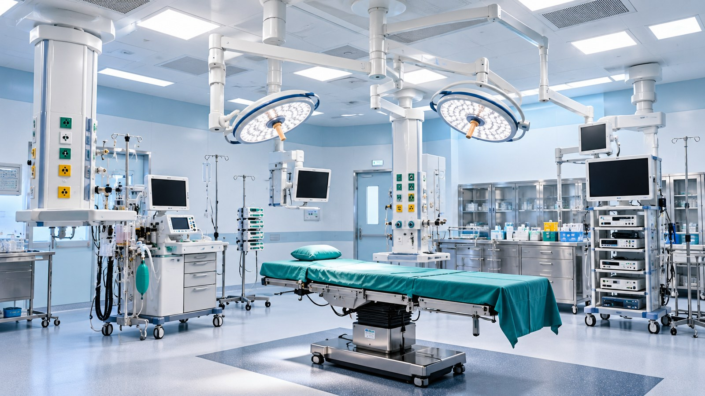

01
Scope & interfaces
Coordination of medical gas outlets, services and equipment interfaces.
An operating theatre relies on a coordinated set of room, utility and equipment interfaces to support clinical workflows.
SYS Medi Tech brings together relevant medical gas, HVAC, MEP, electrical and plumbing scopes according to the project brief and approved design.
“We don’t just install systems — we help build the dependable infrastructure behind every moment of care.”

SYS Medi Tech brings together relevant medical gas, HVAC, MEP, electrical and plumbing scopes according to the project brief and approved design.
Coordination of medical gas outlets, services and equipment interfaces.
Integration of ventilation, lighting, electrical supply and related building services.
Sequencing and on-site coordination with other contractors and specialist vendors.
Operating theatres bring multiple technical systems into a tightly coordinated space. Planning service routes and installation sequences helps teams identify clashes early and prepare for inspection and handover.
We tailor the sequence to the facility, agreed scope and project constraints.
Confirm the facility, intended use, available plans, site conditions and key dependencies.
Align technical interfaces, relevant trades, installation sequence and milestone expectations.
Complete the agreed site activities, checks and handover documentation within the project scope.
Tell us which services you need and our team can discuss the scope and next steps.